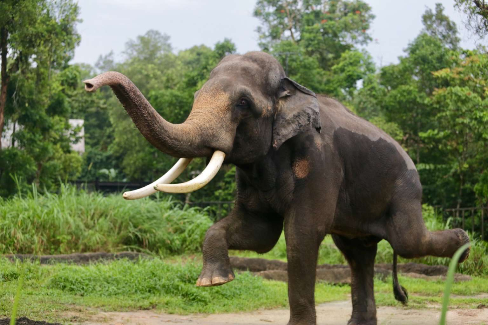
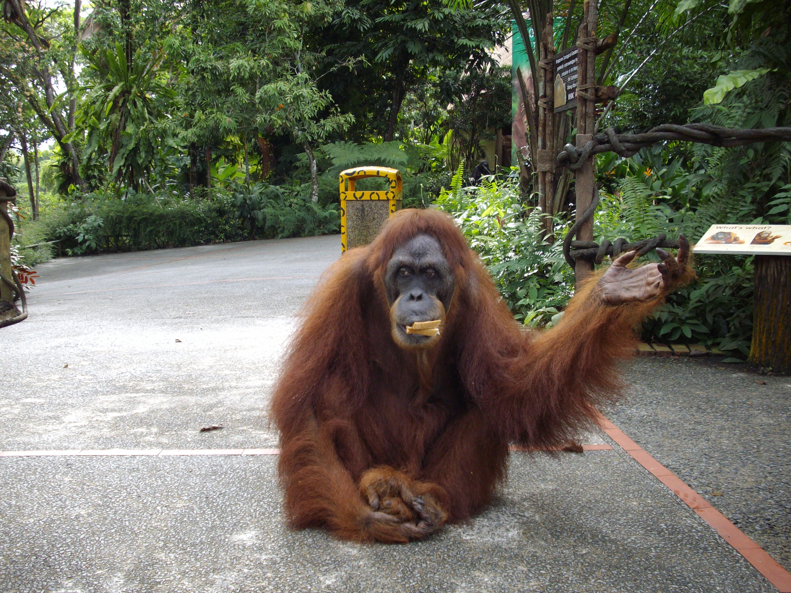

 
Championed by #TeamAhMeng and #TeamChawang
Across the globe, forests are shrinking to make way for development and human activities. Conversion of forests to other use have led to loss of habitat and food source affecting the survival of wildlife.
They are here to raise awareness on deforestation and protect the homes of their forest inhabitants friends.
1. South East Asia is one of the world's BIODIVERSITY HOTSPOTS with more than 1700 species discovered in the past 15 years, average of 2 species per week!
2. SEA also has one of the HIGHEST deforestation rates globally
3. Forest cover in SEA has reduced from 70% to 20%